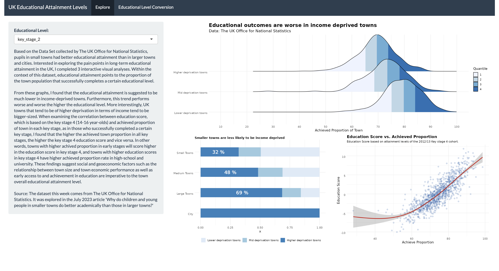
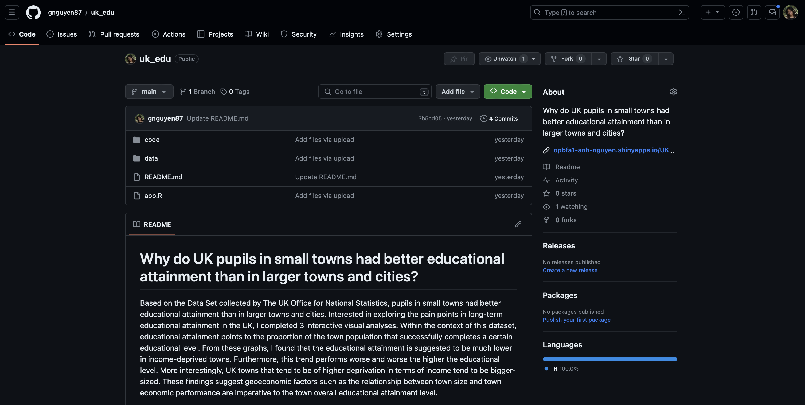

Code
library(tidytuesdayR)
library(readr)
library(dplyr)
library(tidyr)
library(distributional)
library(ggdist)
library(ggplot2)
library(patchwork)
library(palmerpenguins)Na Nguyen
January 28, 2024
Source: The dataset
Here is my published Shiny App using shinyapps.io
A sneak peak to how it looks:

Here is my GitHub Repository for this Tidy Tuesdays where you have access to all of my files.

Why do children and young people in smaller towns do better academically than those in larger towns?
Here are all the libraries I worked with.
Loading the Data
Cleaning Data
english_education_clean <- english_education %>%
select(key_stage_2_attainment_school_year_2007_to_2008, key_stage_4_attainment_school_year_2012_to_2013,level_3_at_age_18, activity_at_age_19_full_time_higher_education, income_flag, size_flag, education_score) %>%
filter(!is.na(income_flag)) %>%
mutate(income_flag = ifelse(income_flag == "Cities", "Higher deprivation towns", income_flag)) %>%
rename(key_stage_2 = key_stage_2_attainment_school_year_2007_to_2008,
key_stage_4 = key_stage_4_attainment_school_year_2012_to_2013,
level_3_age_18 = level_3_at_age_18,
higher_ed_19 = activity_at_age_19_full_time_higher_education) %>%
pivot_longer(cols = 1:4, names_to = "ed_attainment_level", values_to = "proportion")
ed_levels_factored <- factor(c("key_stage_2", "key_stage_4", "level_3_age_18", "higher_ed_19"))
income_flag_factored <- factor(c("Lower deprivation towns", "Mid deprivation towns", "Higher deprivation towns"))
english_education_clean <- english_education_clean %>%
mutate(ed_attainment_level = factor(ed_attainment_level, ed_levels_factored )) %>%
mutate(income_flag = factor(income_flag, income_flag_factored))Since I love all things automated, I coded a preset theme for all graphs as well as a function to streamline a geom_text() layer in the bar chart.
# Function for proportion text
proportion_text <- function(df, size_flag) {
perc <- df %>%
count(size_flag, income_flag) %>%
group_by(size_flag) %>%
mutate(prop = round(n / sum(n) * 100,0)) %>%
select(size_flag, income_flag, prop) %>%
filter(size_flag == {{size_flag}}) %>%
filter(income_flag == "Higher deprivation towns") %>%
pull(prop) %>%
as.character() %>%
paste("%", collapse = "")
return(perc)
}And here are my UI and Server base code for the graphs that are used the Shiny App. For the quantile ridgeline plot and the scatterplot, filters will be added based on user input!
# Define UI for application that draws a histogram
ui <- fluidPage(
shiny::navbarPage(theme = shinytheme("flatly"),
title = "UK Educational Attainment Levels",
tabPanel( "Explore",
# Sidebar with a slider input for number of bins
sidebarLayout(
sidebarPanel(
selectInput("ed_level_id",
"Educational Level:",
levels(english_education_clean$ed_attainment_level)
),
htmlOutput("text")
),
# Show a plot of the generated distribution
mainPanel(
fluidRow(column(width = 12,
plotOutput("RidgelinePlot"))
),
fluidRow(column(width = 6,
plotOutput("barchart")),
column(width = 6,
plotOutput("dotplot"))
)
)
)
),
tabPanel("Educational Level Conversion",
sidebarLayout(
sidebarPanel(
htmlOutput("text1"),
),
mainPanel(
htmlOutput("text2")
)
)
)
)
)# Define server logic required to draw a histogram
server <- function(input, output) {
output$text <- renderUI({
HTML(paste(
"Based on the Data Set collected by The UK Office for National Statistics, pupils in small towns had better educational attainment than in larger towns and cities. Interested in exploring the pain points in long-term educational attainment in the UK, I completed 3 interactive visual analyses. Within the context of this dataset, educational attainment points to the proportion of the town population that successfully completes a certain educational level.",
"From these graphs, I found that the educational attainment is suggested to be much lower in income-deprived towns. Furthermore, this trend performs worse and worse the higher the educational level. More interestingly, UK towns that tend to be of higher deprivation in terms of income tend to be bigger-sized. When examining the correlation between education score, which is based on the key stage 4 (14-16 year-olds) and achieved proportion of town in each key stage, as in those who successfully completed a certain key stage, I found that the higher the achieved town proportion in all key stages, the higher the key stage 4 education score and vice versa. In other words, towns with higher achived proportion in early stages will score higher in the education score in key stage 4, and towns with higher education scores in key stage 4 have higher achieved proportion rate in high-school and university. These findings suggest social and geoeconomic factors such as the relationship between town size and town economic performance as well as early access to and achievement in education are imperative to the town overall educational attainment level.",
"Source: The dataset this week comes from The UK Office for National Statistics. It was explored in the July 2023 article 'Why do children and young people in smaller towns do better academically than those in larger towns?'",
sep = "<br/><br/>"
)
)
})
output$text1 <- renderUI({
HTML(paste(
"Source: https://teachin.com.au/teaching-overseas/uk-curriculum-and-school-year/ " )
)
})
output$text2 <- renderUI({
HTML(paste(
"Schools in England are usually divided into the the following key stages:" ,
"Nursery and Reception Years (3-5 years old). More commonly known as the Early Years Foundations Stage (EYFS)",
"Key Stage 1: Years 1 to 2 (5-7 years old)",
"Key Stage 2: Years 3 to 6 (7-11 years old)",
"Key Stage 3: Years 7 to 9 (11-14 years old)",
"Key Stage 4: Years 10 to 11 (14-16 years old)",
"Level 3 qualifications are: A level, access to higher education diploma, advanced apprenticeship, ...",
"Level 4 qualifications are: certificate of higher education (CertHE), higher apprenticeship, higher national certificate (HNC), ...",
sep = "<br/><br/><br/>" )
)
})
output$RidgelinePlot <- renderPlot({
selected_ed_level <- input$ed_level_id
english_education_clean %>%
filter(ed_attainment_level == selected_ed_level) %>%
ggplot(aes(x = proportion, y = income_flag, fill = stat(quantile)), alpha =.7) +
stat_density_ridges(quantile_lines = FALSE,
calc_ecdf = TRUE,
geom = "density_ridges_gradient") +
scale_fill_brewer(name = "Quantile",palette = 1 ) +
scale_x_continuous(breaks = seq(10, 100, by = 10), limits = c(10, 100)) +
theme_minimal() +
labs( x = "Achieved Proportion of Town",
title = "Educational outcomes are worse in income deprived towns",
subtitle = "Data: The UK Office for National Statistics") +
theme_customization
})
output$barchart <- renderPlot({
english_education_clean %>%
ggplot(aes(y = size_flag, fill = income_flag)) +
geom_bar(position = "fill", width = .45) +
labs( fill = "",
title = "Smaller towns are less likely to be income deprived ") +
geom_text(aes(y = 2, x = 0.35),
label = english_education_clean %>% proportion_text("Large Towns"),
color = "white",
size = 6) +
geom_text(aes(y = 3, x = 0.25),
label = english_education_clean %>% proportion_text("Medium Towns"),
color = "white",
size = 6) +
geom_text(aes(y = 4, x = 0.15),
label = english_education_clean %>% proportion_text("Small Towns"),
color = "white",
size = 6) +
scale_fill_brewer() +
theme_customization +
theme( axis.title.y = element_blank(),
plot.title = element_text(vjust = -1, size = 11),
legend.position = 'bottom')
})
output$dotplot <- renderPlot({
selected_ed_level <- input$ed_level_id
english_education_clean %>%
filter(ed_attainment_level == selected_ed_level) %>%
ggplot(aes(x = proportion, y = education_score)) +
geom_point(shape =1, alpha =.7, color = "#386cb0") +
geom_smooth(color = "red3") +
labs( title = "Education Score vs. Achieved Proportion",
subtitle = "Education Score based on attainment levels of the 2012/13 Key stage 4 cohort.",
y = "Education Score",
x = "Achieve Proportion") +
scale_fill_brewer()+
theme(plot.title = element_text(vjust = -1)) +
theme_customization +
theme(plot.title = element_text(size = 14, face = "bold"),
plot.subtitle = element_text(size = 10),
text = element_text(size = 12, vjust = 1))
})
}This is the incredible source from R Charts that helped me with my quantile ridgeline plot